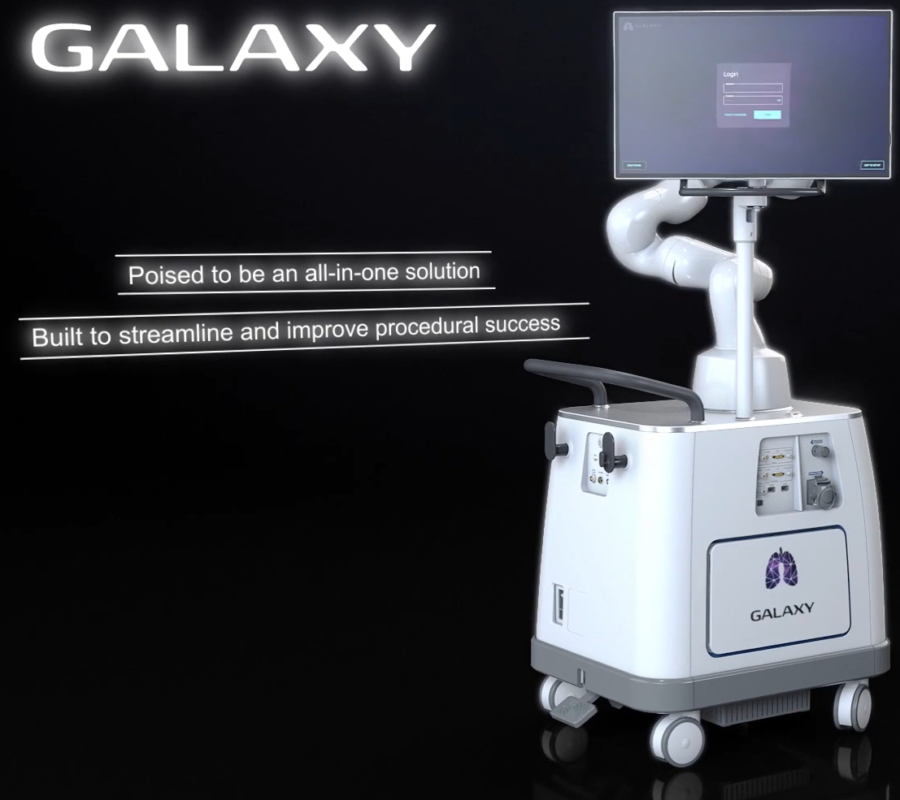

Noah Medical (Employee #1 / 150+)
Senior Engineering Manager — Aug 2025–present · San Carlos, CA
- Lead the robotics organization; own technical vision and control software for next-generation robotic platforms, driving cross-functional decisions across real-time control, motion planning, and system integration.
- Manage a team of up to 7 FTE concurrently (12 total across Noah tenure); lead hiring, mentorship, performance management, and technical career development.
Engineering Manager — Aug 2023–Aug 2025
- Led motion control software for the Galaxy bronchoscopy platform, deployed across hospitals with thousands of clinical procedures performed to date.
- Owned instrument control algorithms, C++ codebase, and automated test suite (MSTest, GoogleTest) for the flexible continuum robot and robotic arm subsystems under the IEC 62304 software lifecycle.
Tech Lead, Robotics and Controls — Apr 2022–Aug 2023
- Designed and implemented multi-thread production motion control algorithms and the C++ software stack for the flexible continuum robot. Contributed code for the 7-DOF arm software stack.
- Authored FDA 510(k) submission documentation for motion control software, including software requirements, architecture, V&V protocols, and risk analysis (IEC 62304 / ISO 14971).
- Led technical design reviews and mentored engineers on real-time control, kinematics, and software best practices.
System Engineer (Robotics and Control engineering) — Sep 2019–Apr 2022
- Sole robotics engineer for 1 year and first employee; built the control software stack from scratch in C++ for flexible continuum robots deployed on QNX RTOS.
- Designed kinematics, motion control, and safety logic enabling early investor demos and cadaver studies.
